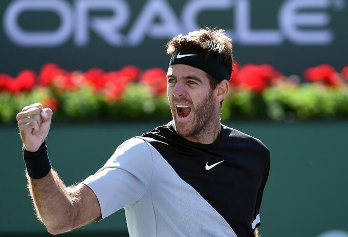

JUAN MARTÍN DEL POTRO, TENISTA PROFESIONAL ARGENTINO

Breve biografía
Juan Martín del Potro (Tandil, 23/09/1988) es un tenista argentino que compite como profesional desde 2005.Comenzó a practicar tenis a los siete años. En agosto de 2008, se convirtió en el primer jugador en la historia de la ATP en ganar cuatro torneos consecutivos en condición de debutante. También consiguió la segunda mejor racha de victorias en 2008.
En 2009 ganó el Abierto de Estados Unidos en individuales, por lo que es el tercer tenista argentino en lograrlo después de Guillermo Vilas y Gabriela Sabatini y el cuarto argentino en ganar un Grand Slam en categoría individual luego de Vilas, Sabatini y Gastón Gaudio.